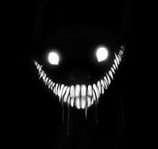

<<<<<<< HEAD
<!DOCTYPE html>
<html lang="en">
<head>
  <meta charset="UTF-8" />
  <meta name="viewport" content="width=device-width, initial-scale=1.0" />
  <title>Digital "Horror" Poem</title>
  <style>
    html, body {
      margin: 0;
      padding: 0;
      background-color: black;
      color: white;
      font-family: 'Courier New', Courier, monospace;
      overflow-x: hidden;
    }

    .container {
      width: 85%;
      max-width: 700px;
      margin: 3rem auto;
      text-align: left;
      position: relative;
      z-index: 1;
    }

    #text-output {
      font-size: 1.5rem;
      line-height: 1.4;
      white-space: pre-wrap;
    }

    .fogwrapper {
      position: fixed;
      top: 0;
      left: 0;
      height: 100vh;
      width: 100vw;
      overflow: hidden;
      z-index: 0;
      -webkit-filter: blur(1px) grayscale(0.2) saturate(1.2) sepia(0.2);
      pointer-events: none;
    }

    #foglayer_01, #foglayer_02, #foglayer_03 {
      width: 200%;
      height: 100%;
      position: absolute;
      top: 0;
    }

    #foglayer_01 {
      animation: foglayer_01_opacity 10s linear infinite, foglayer_moveme 15s linear infinite;
    }

    #foglayer_02 {
      animation: foglayer_02_opacity 21s linear infinite, foglayer_moveme 13s linear infinite;
    }

    #foglayer_03 {
      animation: foglayer_03_opacity 25s linear infinite, foglayer_moveme 20s linear infinite;
    }

    #foglayer_01 .image01, #foglayer_01 .image02 {
      background: url("picture/fog1.png") repeat-x top left transparent;
      background-size: 100%;
      width: 50%;
      height: 100%;
      float: left;
    }

    #foglayer_02 .image01, #foglayer_02 .image02,
    #foglayer_03 .image01, #foglayer_03 .image02 {
      background: url("picture/fog2.png") repeat-x top left transparent;
      background-size: 100%;
      width: 50%;
      height: 100%;
      float: left;
    }

    @keyframes foglayer_01_opacity {
      0% { opacity: 0.1; }
      22% { opacity: 0.5; }
      40% { opacity: 0.28; }
      58% { opacity: 0.4; }
      80% { opacity: 0.16; }
      100% { opacity: 0.1; }
    }

    @keyframes foglayer_02_opacity {
      0% { opacity: 0.5; }
      25% { opacity: 0.2; }
      50% { opacity: 0.1; }
      80% { opacity: 0.3; }
      100% { opacity: 0.5; }
    }

    @keyframes foglayer_03_opacity {
      0% { opacity: 0.8; }
      27% { opacity: 0.2; }
      52% { opacity: 0.6; }
      68% { opacity: 0.3; }
      100% { opacity: 0.8; }
    }

    @keyframes foglayer_moveme {
      0% { left: 0; }
      100% { left: -100%; }
    }


    #jumpscare {
      position: fixed;
      top: 0;
      left: 0;
      width: 100vw;
      height: 100vh;
      object-fit: cover;
      z-index: 9999;
      display: none;
      pointer-events: none;
    }
  </style>
</head>
<body>

  <!-- FOG -->
  <div class="fogwrapper">
    <div id="foglayer_01" class="fog">
      <div class="image01"></div>
      <div class="image02"></div>
    </div>
    <div id="foglayer_02" class="fog">
      <div class="image01"></div>
      <div class="image02"></div>
    </div>
    <div id="foglayer_03" class="fog">
      <div class="image01"></div>
      <div class="image02"></div>
    </div>
  </div>


  <div class="container">
    <div id="text-output"></div>
  </div>

  <!-- Jumpscare Image -->
  

  <!-- Background Audio -->
  <audio id="bg-audio" autoplay loop>
    <source src="" type="audio/mpeg" />
    Your browser does not support the audio element.
  </audio>

  <!-- Typing + Jumpscare -->
  <script>
    const storyLines = [
      "You wake up in a room with no doors.",
      "The walls breathe. Not literally — but they feel alive.",
      "The light overhead hums. Then cracks. Then fades.",
      "You're not alone. You never are.",
      "The silence is thick, like it's pressing against your chest.",
      "A whisper slithers through the darkness: 'Still here?'",
      "You try to answer, but your voice is buried under something heavy.",
      "The air is cold. Not freezing — just numb.",
      "You reach for a memory, any memory... but it's static.",
      "Something stirs behind you.",
      "You don’t turn around. You already know it’s there.",
      "It’s always been there.",
      "A shadow slips into your mind — soft, like a thought you didn’t invite.",
      "'You weren’t meant to make it this far,' it says.",
      "You feel your limbs pulling down, as if the floor wants you.",
      "You blink. The room is smaller. Tighter. Heavier.",
      "Familiar voices echo, warped and muffled: laughter turned to screams.",
      "You clutch your chest, but the feeling won’t come back.",
      "It crouches next to you now. It smells like yesterday.",
      "You want to cry. You think you do. Maybe you already did.",
      "It leans in, and with a breath like ice, it whispers:",
      "'Let go.'",
      "You close your eyes.",
      "And for a moment... the weight is gone.",
      "But the darkness is still there.",
      "It always is."
    ];

    const output = document.getElementById("text-output");
    let lineIndex = 0;
    let charIndex = 0;

    function typeLine() {
      if (lineIndex >= storyLines.length) return;

      const currentLine = storyLines[lineIndex];

      if (charIndex < currentLine.length) {
        output.innerHTML += currentLine.charAt(charIndex);
        charIndex++;
        window.scrollTo(0, document.body.scrollHeight);
        setTimeout(typeLine, 100);
      } else {
        output.innerHTML += "\n\n";
        charIndex = 0;
        lineIndex++;
        setTimeout(typeLine, 2000);
      }
    }

    function triggerJumpscare() {
      const jumpscare = document.getElementById("jumpscare");
      const randomDelay = Math.random() * 30000 + 10000; 

      setTimeout(() => {
        jumpscare.style.display = "block";

        
        new Audio('sound/scream.mp3').play();

        setTimeout(() => {
          jumpscare.style.display = "none";
          triggerJumpscare(); 
        }, 200); 
      }, randomDelay);
    }

    window.onload = () => {
      const audio = document.getElementById("bg-audio");
      if (audio) audio.volume = 0.2;
      typeLine();
      triggerJumpscare();
    };
  </script>
</body>
</html>
=======


>>>>>>> 11317ad987b46857dca4d8b49ae0871360168fd7
